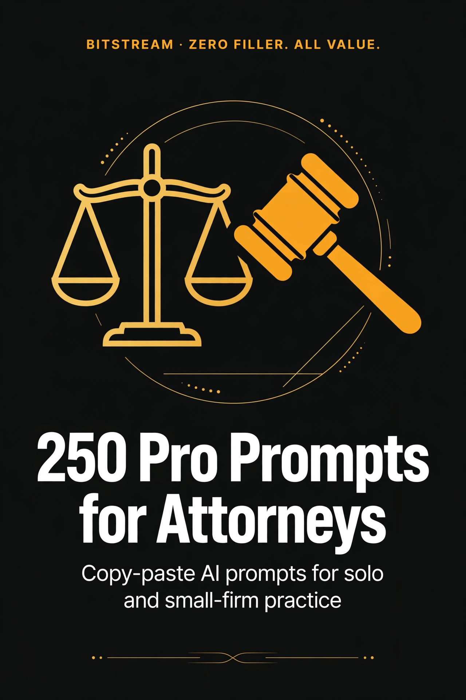

BITSTREAM · ZERO FILLER. ALL VALUE.
250 Pro Prompts
for Attorneys
250 copy-paste AI prompts for solo & small-firm practice.
Open a free AI tool, paste, fill in the blanks, done.
PRO PACK · $14.99
How to use this pack (60 seconds)
- Open a free AI tool — ChatGPT (chatgpt.com), Claude (claude.ai), or Gemini (gemini.google.com). No account tricks, no paid plan needed.
- Copy any prompt and replace the [BRACKETED] parts with your matter details.
- Sanitize before you paste. Never feed client names, privileged facts, or opposing-party details into a public AI tool. Use placeholders like "Client A" and "the opposing party" — you decide what goes in.
- AI drafts, you decide. Every output is a starting draft. Check citations against real sources, confirm deadlines against your jurisdiction's rules, and make the legal judgment yourself.
- Talk instead of typing. Every one of these tools has a voice mode — dictate case notes while you walk, let it turn the ramble into a clean draft.
Rule 1 — You are the lawyer, AI is the paralegal. These prompts produce outlines, checklists, first drafts, and client-friendly explanations. They never make legal conclusions for you — every output gets your review against real sources and your jurisdiction's rules before it touches a client or a court.
Rule 2 — No privileged data in, no exceptions. Strip client identities, dates of birth, account numbers, and privileged facts before pasting anything into a free AI tool. Placeholders in, real names only in your firm's systems.
Rule 3 — One workflow at a time. Don't overhaul your whole practice today. Pick one: intake, drafting, or client communication — and start there.
1 · Intake & Client Qualification
Qualify faster, spot conflicts early, and send every new client home with something useful.
PROMPT 001
Intake questionnaire builder
Draft a client intake questionnaire for a [family law / personal injury / estate planning] practice. Include: contact info, the facts of the matter, timeline, prior attorneys, and a conflict-check field. Organize it as a clean checklist a new client can finish in 15 minutes. No legal advice — just data gathering.
PROMPT 002
Practice-area fit screener
Turn this practice-area description into a 10-question phone screener I can use to decide whether a caller's matter fits my practice: [paste your practice description]. For each question, note what a "good fit" answer looks like and what red flags to listen for.
PROMPT 003
Red-flag case screener
List 15 warning signs that a [personal injury] matter may be a poor fit for a solo practice (low damages, liability problems, prior counsel issues, fee-collection risk). Format as an intake checklist with a one-line explanation of each flag so my staff can screen calls.
PROMPT 004
Conflict-check intake form
Draft a conflict-of-interest intake form section for new consultations. List every field I should capture: full names of all parties, related entities, adverse parties, witnesses, and prior law firms involved. Add a one-line instruction telling staff how to run it against our existing client list. For internal screening only — not legal advice.
PROMPT 005
Phone consult script
Write a 10-minute initial phone consultation script for [estate planning] prospects. Structure: warm opening, 6 fact-finding questions, fee-structure explanation, and a clear close ("here's what happens next"). Professional and reassuring, not salesy. I'll review for bar compliance before use.
PROMPT 006
Fee conversation opener
Draft a plain-English explanation of how [contingency / flat-fee / hourly] billing works for [personal injury] clients. Cover: what the fee is, what costs are separate, and when payment happens. Keep it at a 6th-grade reading level so a nervous first-time client understands. I'll verify it against my fee agreement.
PROMPT 007
Retainer terms explainer
Turn my engagement letter into a one-page plain-English summary a client can read before signing. Keep all the substance, lose the legalese: scope of work, fees, costs, termination, and what I need from the client. Use this as the base: [paste engagement letter or key terms]. For explanation only — the signed letter governs.
PROMPT 008
Document request letter to new client
Draft a friendly document-request letter for a newly retained [divorce] client. List every document they'll typically need: financial records, tax returns, bank statements, mortgage docs, and account logins inventory. Add deadlines for each batch and a note that incomplete documents delay their case. I'll review before sending.
PROMPT 009
Case acceptance checklist
Build a case-acceptance decision checklist for my [criminal defense] practice. Include: conflict check, statute of limitations status, collectability, scope of likely work, client reliability signals, and my calendar capacity. End with a simple "accept / decline / refer" scoring guide. Decision support only — I make the call.
PROMPT 010
Declination letter template
Draft a professional declination letter for prospective clients whose matters I can't take. Tone: respectful, brief, no reason given. Include: no-attorney-client-relationship disclaimer, a reminder about deadlines that may apply to their matter, and a suggestion to consult other counsel promptly. I'll adapt to my jurisdiction's rules.
PROMPT 011
Referral letter to another attorney
Draft a warm referral letter/email to send when I refer a [workers' compensation] matter to [attorney name/firm]. Include the matter type, what makes it a good fit for them, and a note that I'm sending the client with context so they don't start cold. Professional courtesy, no fee-splitting discussion.
PROMPT 012
Client welcome packet outline
Outline a new-client welcome packet for my firm: what to include (engagement letter, fee summary, timeline overview, contact info, client responsibilities), in what order, and one page that answers the 5 questions every client asks first. This is an organizing document — I'll draft the final versions.
PROMPT 013
Intake call summary template
Create an intake call summary template for my staff: caller facts, matter type, jurisdiction, urgency/trigger events, fee discussion notes, and a follow-up action list. Make it a fill-in form so nothing gets lost between the call and my review. Internal use only.
PROMPT 014
Prospective client follow-up email
Draft a follow-up email for a consultation that didn't close. Tone: helpful, no pressure. Remind them of the key point I made in the consult, offer one useful next step they can take on their own, and leave the door open. Professional and bar-compliant — no promises of outcomes. I'll review before sending.
PROMPT 015
Non-engagement confirmation letter
Draft a non-engagement letter confirming I am NOT representing [prospective client] after their consultation. Clear, kind, and firm: no representation, no ongoing duty, reminder to watch their own deadlines. I'll customize to my jurisdiction's requirements.
PROMPT 016
Second-opinion consult outline
Build a 20-minute second-opinion consultation outline for clients currently represented elsewhere. Cover: what I'll review, what I can and can't say about their current lawyer, what information I need from them, and how to close without disparaging their counsel. Ethical boundaries built in — I'll verify against my bar's rules.
PROMPT 017
Emergency intake triage guide
Create an after-hours intake triage guide for my [criminal defense] practice staff: which calls are true emergencies (arrests, imminent deadlines), what questions to ask immediately, what to tell the caller to do right now, and when to page me. Organized as a decision tree my staff can follow at midnight.
PROMPT 018
Practice-area landing FAQ
Draft 10 FAQs for my website's [landlord-tenant] page: what I handle, what I don't, typical timelines, how fees work, and what to bring to a consult. Plain English, no legal advice, no guarantees — a screening tool that also educates. I'll review for advertising-rule compliance.
PROMPT 019
Client onboarding timeline
Build a week-one client onboarding timeline for a new [business formation] matter: Day 1 (engagement + docs), Day 3 (first deliverable draft), Day 5 (review call), Day 7 (filing checklist). For each step list who does it, what the client provides, and the status update the client gets. Organizer only — I set the actual pace.
PROMPT 020
Fee agreement checklist
Build a checklist of everything a compliant fee agreement in my practice should contain: scope, rate/fee, costs and expenses, billing frequency, retainer/replenishment terms, and termination. General organizing checklist only — I'll confirm against my state's bar rules before using it.
PROMPT 021
Matter opening checklist
Create a new-matter opening checklist: conflict check, engagement letter signed, retainer received, calendar deadlines, document requests sent, and client welcome email. One page, checkboxes, in the order my staff should do them. Internal process tool.
PROMPT 022
Client communication preferences form
Draft a short client communication preferences form: preferred channel (email/phone/text), best times, who else may be looped in, and how they want urgent updates delivered. Add a one-line privacy note about texting security. I'll adapt to my firm's systems.
PROMPT 023
Intake notes to case summary
Turn these raw intake notes into a clean one-page case summary: facts, parties (use placeholders Client A/B), key dates, documents received, open questions, and recommended next steps for MY review. Organize the facts — don't draw conclusions: [paste sanitized intake notes].
PROMPT 024
Budget estimate worksheet
Build a litigation budget estimate worksheet for a [breach of contract] matter: phases (filing, discovery, motion practice, trial prep, trial), hours per phase, my rate, and likely costs. Format as a table with a low/high range. Planning tool only — I'll set the real numbers with my experience.
PROMPT 025
Referral source thank-you note
Draft a thank-you note to [past client / colleague] who referred a new matter to my firm. Warm, professional, mentions nothing confidential about the new client. Compliant with my bar's solicitation rules — I'll review before sending.
2 · Research Outlines & Briefs
Organize your research before you write — outlines, issue trees, and citation trackers.
PROMPT 026
Issue-spotting checklist
Build an issue-spotting checklist for a [slip-and-fall premises liability] matter. Organize by legal issue: duty, breach, causation, damages, defenses. Under each, list the sub-questions I need to research and the fact categories that answer them. Checklist only — I verify every answer against real authority.
PROMPT 027
Research plan for a novel issue
Outline a research plan for this question in [my state]: [describe the legal issue in one sentence]. List the research path in order: controlling statutes, key cases to look for, secondary sources, and jurisdiction-specific traps. I'll do the actual research on Westlaw/Lexis — this is just the roadmap.
PROMPT 028
Case brief template
Create a case-brief template I can reuse: caption, court/date, facts, procedural history, issues, holdings, reasoning, and "how it helps my matter" field. Clean format, one page per case. Internal tool — I'll fill it from the actual opinions.
PROMPT 029
50-state comparison framework
Build a comparison framework for researching how [non-compete enforceability] is treated across [5 states]. Columns: controlling statute, key factors courts weigh, notable case names to pull, and practice pointers. I'll populate it from real sources — this is the skeleton only.
PROMPT 030
Statute decoding worksheet
Turn this statute into a working worksheet: break it into elements, list what each element requires, and leave space for the cases I'll find interpreting each one: [paste statute text]. Formatting and organizing only — I do the legal analysis.
PROMPT 031
Argument outline builder
Build a blank argument outline for a [summary judgment motion] in [my jurisdiction]: standard of review, each element of the claim with a facts slot and an authority slot, anticipated counterarguments, and a conclusion slot. Structure only — I fill in the law and decide the strategy.
PROMPT 032
Opposing argument preview
Help me brainstorm what opposing counsel will likely argue against my [negligence] claim given these facts: [paste sanitized facts]. For each likely argument, suggest the fact I'd need to strengthen my response. This is a stress-test brainstorm — not a prediction, and I make the strategy call.
PROMPT 033
Citation tracker sheet
Build a citation tracking table for my brief: columns for citation, page, proposition it supports, and "verified against the source (yes/no)". Add a reminder row at the top: every quote and holding must be verified against the actual opinion before filing. Internal quality control only.
PROMPT 034
Standard-of-review cheat sheet
Draft a one-page standard-of-review reference for [my state's appellate court]: common motions and appeals, the review standard for each, and where to find the controlling rule. Leave the citations blank for me to fill from real sources. Reference sheet only — I'll verify every standard.
PROMPT 035
Jury instruction research list
List the pattern jury instructions likely relevant to a [breach of fiduciary duty] claim in [my state], organized by element of the claim. For each, leave space for the instruction number and source I'll confirm. Research roadmap only — I pull and verify the real instructions.
PROMPT 036
Damages element breakdown
Break [compensatory damages in a contract case] into its elements as a research worksheet: each element, what proof it needs, what documents typically prove it, and a slot for the controlling authority I'll find. Worksheet only — I do the legal work.
PROMPT 037
Affirmative defenses checklist
Build an affirmative defenses screening checklist for a [debt collection defense] matter: common defenses, the facts that support each, and the deadline to plead them. Format as checkboxes with "facts needed" under each. I'll verify every defense against real authority before pleading it.
PROMPT 038
Expert topic research outline
Outline what a [forensic accountant] expert will likely need to opine on in my [business valuation dispute]: the standard of proof, the methodology questions, and the documents they typically review. Organizing outline only — I select and qualify the actual expert.
PROMPT 039
Legislative history tracker
Build a tracker for researching the legislative history of [statute name/number]: what sources to check in order (committee reports, floor debates, amendments), what question each answers, and where to record findings. Roadmap only — I pull and read the actual sources.
PROMPT 040
Distinguishing unfavorable cases
Help me organize a distinguishing analysis. The unfavorable case says: [paste the holding in your own words]. My facts are: [paste sanitized facts]. List the factual differences point by point and leave a slot for me to decide which ones matter. Brainstorm only — I verify the case and make the argument.
PROMPT 041
Memorandum of law skeleton
Build the skeleton of an internal memorandum of law: question presented, brief answer, facts, discussion (organized by issue with sub-slots for rules and application), and conclusion. Include formatting notes for headings. Structure only — all analysis and conclusions are mine.
PROMPT 042
Deadlines-from-statute calculator
This rule sets a deadline: [paste rule text]. Break down the computation step by step: trigger event, counting method, weekend/holiday treatment, and any extension provisions mentioned. I'll verify the math against the actual rule and local practice before calendaring.
PROMPT 043
Local rules compliance checklist
Build a pre-filing compliance checklist template for [my court]: font/margins/page limits, certificate requirements, service rules, exhibit formatting, and filing method. Leave each item for me to confirm against the current local rules — courts update these, and I'll verify before every filing.
PROMPT 044
Privileged research memo template
Create a reusable template for internal research memoranda: matter reference (placeholder only, no client names in AI), date, question, short answer, analysis with authority slots, open questions, and "to verify" list. Marked "ATTORNEY WORK PRODUCT — internal only" as a header. Internal process tool.
PROMPT 045
Case law update summary format
Create a format for a monthly case-law update I can send clients in [my practice area]: 3 recent decisions, one plain-English paragraph each, and "why it matters to you" line. No predictions, no advice to non-clients — informational only. I'll write the actual summaries from the real opinions.
PROMPT 046
Choice-of-law analysis worksheet
Build a choice-of-law worksheet for a matter touching [two states]: the connecting factors, the test the forum court uses, and a slot for the authority I'll find on each factor. Worksheet only — I research and decide.
PROMPT 047
Evidence admissibility checklist
Build an evidence admissibility checklist for [text messages in a civil trial]: authentication requirements, hearsay analysis slots, exceptions to check, and objections to anticipate. Organized by step. I'll verify every rule against real authority before the hearing.
PROMPT 048
Oral argument prep outline
Build an oral argument preparation outline: the 3 points I must make, the 5 hardest questions the panel might ask (brainstormed from my brief's weak spots), and a one-line answer draft for each. Prep tool only — I verify every case cited and make the strategic calls.
PROMPT 049
Regulatory compliance checklist
Build a general compliance checklist for a [small business client] in [my state] covering: entity filings, licenses, employment basics, and tax registrations. High-level organizing checklist only — I'll verify each item against current regulations and have licensed counsel review before any client sees it.
PROMPT 050
Research-to-writing handoff template
Create a research handoff template: issue, the rule I found (with source citation for me to verify), the key facts it maps to, quotes worth using (with page refs), and gaps still open. Clean format so research turns into a draft without losing anything. Internal tool — all conclusions mine.
3 · Drafting & Document Templates
First drafts at drafting speed — contracts, letters, and forms you review before anyone else sees.
PROMPT 051
NDA first draft
Draft a mutual non-disclosure agreement template for [two small businesses discussing a partnership]. Include: definition of confidential info, exclusions, term, permitted disclosures, and return-of-materials clause. Mark every placeholder clearly. First draft only — I'll review for enforceability in my jurisdiction before any client uses it.
PROMPT 052
Independent contractor agreement draft
Draft an independent contractor agreement template for [a freelance marketing consultant]: scope, payment terms, term/termination, IP ownership, confidentiality, and non-solicitation. Plain but professional. First draft only — I'll tailor it to my state's classification rules before use.
PROMPT 053
LLC operating agreement starter
Draft a starter operating agreement for a [two-member LLC in my state]: ownership splits, capital contributions, management structure, distributions, and buyout provisions. Clear placeholders throughout. Starting point only — I'll finalize it against my state's LLC statute.
PROMPT 054
Residential lease template
Draft a residential lease template: parties, term, rent and due date, security deposit terms, maintenance responsibilities, and default/notice provisions. Leave jurisdiction-specific items as [CHECK LOCAL LAW] flags. Draft only — I'll complete it against my state's landlord-tenant code.
PROMPT 055
Demand-response letter framework
Build a response-to-demand-letter framework: opening acknowledgment, factual corrections section, legal position section, and a closing that preserves options. Neutral and professional. Structure only — I decide the substance and review every word before it goes out.
PROMPT 056
Settlement agreement template
Draft a settlement agreement template for a [civil dispute]: recitals, settlement amount and payment terms, mutual releases, confidentiality clause, dismissal provision, and governing law. Clear placeholders. Template only — I'll negotiate the real terms and review against my jurisdiction's rules.
PROMPT 057
Cease-and-desist first draft
Draft a cease-and-desist letter for [trademark infringement of my client's mark]: identify the mark, describe the infringing use, state the demand with a deadline, and close with next steps. Firm but professional. First draft only — I'll verify the facts and legal basis before it goes out.
PROMPT 058
Power of attorney template
Draft a [durable financial] power of attorney template: appointment of agent, powers granted (organized by category), effective date, and revocation clause. Flag every spot that needs my state's statutory language with [CHECK STATE STATUTE]. Draft only — I'll complete it against the actual statute.
PROMPT 059
Simple will outline-to-draft
Draft a simple will template: executor appointment, beneficiary designations, guardianship nomination for minor children, and residuary clause. Plain structure with clear placeholders. Starting point only — estate plans get my full review against my state's probate code before any client signs.
PROMPT 060
Client letter: status update
Draft a client status-update letter for a [personal injury] matter at the [discovery] stage. Explain what's happening, what's next, and what the client should (and shouldn't) do right now. Warm, plain English, no predictions about outcomes. I'll review before sending.
PROMPT 061
Engagement scope amendment
Draft an engagement-letter amendment for when a matter expands: reference the original agreement, describe the new scope, adjust the fee terms, and get a fresh signature line. Template only — I'll confirm it meets my bar's fee-agreement requirements.
PROMPT 062
Subpoena cover letter
Draft a professional cover letter to accompany a subpoena to [a bank / medical provider]: identify the matter generically, list what's requested, state the compliance deadline, and give my contact for questions. Courteous and precise. I'll review before sending.
PROMPT 063
Mediation statement framework
Build a mediation statement framework: case summary, strengths to highlight, weaknesses to acknowledge privately, and a settlement-range analysis section. Organized for the mediator's eyes, with a private section for my eyes only. Framework only — I make the strategy calls.
PROMPT 064
Expert retention letter
Draft an expert retention letter: scope of work, fee arrangement, confidentiality expectations, document delivery process, and report deadline. Professional and thorough. Template only — I'll customize for the engagement.
PROMPT 065
Closing checklist letter
Draft a matter-closing letter to a [real estate transaction] client: what was completed, documents they're receiving, where records are stored, and a reminder about any post-closing deadlines (tax filings, renewals). Warm and complete. I'll review before sending.
PROMPT 066
Bill of sale template
Draft a bill of sale for [a used vehicle]: seller, buyer, item description, price, "as-is" language, and signature lines. Simple and complete. Template only — I'll verify it meets my state's requirements.
PROMPT 067
Promissory note template
Draft a promissory note template: principal, interest rate, payment schedule, late fees, and default provisions. Clear placeholders for the numbers. Template only — I'll review the terms before any client signs.
PROMPT 068
Employment offer letter draft
Draft an employment offer letter for a [small business hiring an office manager]: title, start date, salary, at-will statement, and benefits summary. Flag at-will language with [VERIFY STATE LAW]. Draft only — I'll complete it against my state's employment rules.
PROMPT 069
Liability waiver template
Draft a liability waiver for [a fitness studio]: assumption of risk, release language, and a medical-emergency authorization. Mark enforceability-sensitive sections with [VERIFY STATE LAW] — waivers are jurisdiction-sensitive. Draft only, reviewed by me before use.
PROMPT 070
Meeting minutes template
Create corporate meeting minutes template for a small LLC: attendees, quorum, resolutions passed, votes, and action items. Formal but simple. Internal template — I'll verify it meets my state's corporate formalities.
PROMPT 071
Letter of intent framework
Build a letter-of-intent framework for a [small business acquisition]: deal terms section, binding vs. non-binding sections clearly labeled, exclusivity period, and closing timeline. Framework only — I decide what's binding and review every term.
PROMPT 072
Privacy policy plain-English draft
Draft a plain-English privacy policy for a [small business website]: what data is collected, how it's used, how it's protected, and user rights. Flag state-specific requirements with [VERIFY APPLICABLE LAW]. Draft only — I'll complete it against the actual privacy statutes.
PROMPT 073
Terms of service starter
Draft starter terms of service for [an online coaching business]: services described, payment terms, cancellation policy, IP ownership, and limitation of liability. Mark jurisdiction-sensitive spots. Starting point only — reviewed by me before publication.
PROMPT 074
Demand letter for unpaid invoice
Draft a demand letter for an unpaid [contractor] invoice of [$X], [60] days overdue: state the amount owed, reference the agreement, demand payment by a date, and note next steps without threats. Professional and firm. First draft only — I'll verify the facts before it goes out.
PROMPT 075
Document versioning checklist
Build a document version-control checklist for my practice: naming convention, redline protocol, client-review copy labeling, and final-execution copy safeguards. One page my staff can follow. Internal process tool.
4 · Pleadings & Motion Support
Structural help for filings — formatting, checklists, and first-draft scaffolding you complete.
PROMPT 076
Complaint structure builder
Build the structural skeleton of a [negligence] complaint in [my court]: caption, parties, jurisdiction/venue, factual allegations organized by element, counts with element slots, and prayer for relief. Structure only — I write the facts, verify the law, and decide what to plead.
PROMPT 077
Answer and affirmative defenses draft
Draft a template answer to a [breach of contract] complaint: numbered admissions/denials format, general denial options, and a menu of common affirmative defenses as placeholders. Template only — I verify each defense against real authority and decide what to assert.
PROMPT 078
Motion to dismiss outline
Outline a motion to dismiss for [failure to state a claim] in [my court]: standard of review, argument headings organized by each pleaded count, and a slot for the controlling authority I'll cite. Outline only — I verify every citation and make the strategic call.
PROMPT 079
Summary judgment brief skeleton
Build a summary judgment brief skeleton: statement of undisputed facts (numbered, with exhibit slots), standard of review, argument per element with "fact + authority" slots, and conclusion. Structure only — I do the research, verify the facts against exhibits, and write the argument.
PROMPT 080
Opposition brief framework
Build an opposition-to-summary-judgment framework: introduction, counter-statement of facts highlighting disputes, legal standard favoring the non-movant, and argument headings attacking each of movant's points. Framework only — I verify the law and decide the strategy.
PROMPT 081
Motion in limine template
Draft a motion in limine template to [exclude hearsay testimony]: caption, relief requested, factual background slots, legal argument slots, and proposed order. Template only — I'll fill in the facts, verify the evidentiary rules, and decide whether to file.
PROMPT 082
Discovery motion outline
Outline a motion to compel discovery in [my court]: the meet-and-confer certification section, the disputed requests organized one by one, and a legal argument slot for each. Outline only — I verify the rules and complete the arguments.
PROMPT 083
Protective order motion framework
Build a protective order motion framework: good-cause statement slots, the specific protections requested, and a proposed order with blank fields for the judge. Framework only — I verify the standard and decide the scope.
PROMPT 084
Default judgment motion checklist
Build a default judgment motion checklist: proof of service verification, clerk's default status, damages documentation needed, and the affidavit slots. Checklist only — I'll verify service and damages against the real record.
PROMPT 085
Amendment motion template
Draft a motion-for-leave-to-amend template: the proposed changes summarized, the standard for granting leave, and a slot for the prejudice argument. Template only — I verify the rule and decide the timing.
PROMPT 086
Extension of time motion
Draft a motion for extension of time template: the deadline at issue, the reason (stated generally), the new date requested, and a certification of conferral. Professional and concise. Template only — I verify the rule and the real deadline.
PROMPT 087
Sanctions opposition framework
Build a framework for opposing a sanctions motion: factual timeline slots, the legal standard for sanctions, and mitigation points to develop. Framework only — I verify the facts and make the strategic decisions.
PROMPT 088
Proposed order template
Draft a proposed order template to accompany my motion: caption, findings slots, ordered relief with blank fields, and signature line. Clean formatting matching [my court]'s conventions. Template only — the judge decides.
PROMPT 089
Certificate of service template
Draft a certificate of service template: document title, service date, method of service, parties served, and signature block. One page, reusable. I'll verify it meets my court's requirements.
PROMPT 090
Notice of hearing template
Draft a notice of hearing template: caption, matter reference, hearing date/time/location, and what will be addressed. Simple and complete. I'll confirm the details against the court's scheduling order.
PROMPT 091
Stipulation template
Draft a stipulation template for [extending a discovery deadline]: the parties' agreement stated plainly, the new date, and signature lines. Template only — I'll confirm it complies with my court's rules on stipulations.
PROMPT 092
Exhibit list formatter
Create an exhibit list template: exhibit number, description, date, bates range, and "admitted / for identification" columns. Clean table format. Internal organizational tool — I verify every exhibit against the real documents.
PROMPT 093
Table of authorities builder
Build a table-of-authorities worksheet: columns for case/statute/rule, the page numbers where cited, and a "verified against source" checkbox. Formatting guide included for [my court]'s requirements. I'll verify every citation against the real sources.
PROMPT 094
Pre-filing motion checklist
Build a pre-filing checklist for motions in [my court]: page limits, font and spacing, required certificates, service completed, exhibits attached and labeled, proposed order included. One page. I'll verify against current local rules before every filing.
PROMPT 095
Oral argument one-pager
Build a one-page oral argument cheat sheet template: the 3 points I must land, the relief I'm asking for, the weakest point of my position (with my planned answer), and the case names I must pronounce correctly. Prep tool — I verify every cite and make the calls.
PROMPT 096
Reply brief outline
Outline a reply brief structure: the 3 points from the opposition that need answers (with slots), new-authority section, and a tight conclusion. Outline only — I verify the law and decide what to concede.
PROMPT 097
Emergency motion triage list
Build an emergency-motion triage checklist: what makes a motion truly emergent, the notice requirements, the declaration slots needed, and the proposed order. Checklist only — I verify the court's emergency procedures and make the call.
PROMPT 098
Settlement conference statement outline
Outline a settlement conference statement: confidential section for the judge (case valuation analysis slots), the non-confidential summary, and settlement authority documentation. Outline only — I set the numbers and strategy.
PROMPT 099
Post-hearing follow-up letter
Draft a post-hearing letter to the client: what happened in plain English, what the judge decided or took under advisement, what's next, and the timeline. No predictions — just facts and next steps. I'll review before sending.
PROMPT 100
Filing deadline tracker
Build a filing-deadline tracking sheet template: matter reference (placeholder), document due, rule that sets the deadline, computed date, and "verified against rule" checkbox. One page per matter. I'll verify every date against the actual rules before calendaring.
5 · Discovery Planning
Plan discovery like a checklist, not a scramble — requests, timelines, and review workflows.
PROMPT 101
Discovery plan outline
Build a discovery plan for a [breach of contract] matter: what I need to prove, the documents that prove it, who to depose, and the order to do it in. Organized as a phased checklist. Planning tool only — I set the strategy.
PROMPT 102
Interrogatory drafting assistant
Draft 20 interrogatories for a [personal injury] case: organized by topic (liability, damages, insurance, prior incidents), each one targeted and specific. Numbered, with [CHECK LOCAL LIMITS] noted. First drafts only — I review every question before serving.
PROMPT 103
Document request builder
Draft 25 document requests for a [employment discrimination] matter: personnel files, communications, policies, and compensation records — organized by category. Specific and proportional. First drafts only — I tailor them to the facts before serving.
PROMPT 104
Request for admissions draft
Draft 15 requests for admission for a [car accident] case: ownership, insurance coverage, and undisputed facts. Short, single-fact statements. First drafts only — I verify each fact against my file before serving.
PROMPT 105
Deposition topic list
Build a deposition topic outline for deposing [the defendant driver] in a [car accident] case: background, the incident, post-incident conduct, damages knowledge, and impeachment setup. Organized by phase with time estimates. Outline only — I run the deposition.
PROMPT 106
ESI preservation letter
Draft a litigation-hold / preservation letter for [a small business defendant]: what to preserve (emails, texts, files, backups), the date range, and the consequences of spoliation stated plainly. Professional and thorough. Draft only — I'll review before sending.
PROMPT 107
Discovery response organizer
Turn these opposing discovery requests into a response worksheet: each request, a "responsive documents located" slot, an objection slot, and a production-status checkbox: [paste requests]. Organizing tool only — I decide the objections.
PROMPT 108
Privilege log template
Create a privilege log template: document ID, date, author, recipients, subject, and privilege basis columns. Clean table format. Internal tool — I determine what's actually privileged.
PROMPT 109
Document review protocol
Build a document-review protocol for a [10,000-document] production: review categories (responsive, privileged, hot), coding fields, escalation rules, and quality-check sampling rate. One page my reviewers can follow. Internal process tool — I set the legal standards.
PROMPT 110
Subpoena duces tecum draft
Draft a subpoena duces tecum template for [bank records]: the records described with specificity, the date range, and the compliance deadline. Template only — I verify the scope and procedure against my jurisdiction's rules.
PROMPT 111
Expert discovery checklist
Build an expert discovery checklist: expert disclosures due, report requirements, the documents my expert needs, and deposition prep milestones. Organized by deadline. Checklist only — I verify every date against the scheduling order.
PROMPT 112
Deposition notice template
Draft a deposition notice template: deponent, date/time/location, the records to bring (with specificity), and method of recording. Clean format. Template only — I verify the notice requirements in my jurisdiction.
PROMPT 113
Meet-and-confer letter
Draft a meet-and-confer letter about deficient discovery responses: list the deficiencies one by one, state what's needed to cure each, and propose a call date. Professional, specific, and documented. Draft only — I'll review before sending.
PROMPT 114
Discovery deadline calendar
Build a discovery deadline worksheet from a scheduling order: each deadline, the rule or order that sets it, the computed date, and a "verified" checkbox: [paste scheduling order deadlines]. Worksheet only — I verify every computation before calendaring.
PROMPT 115
Third-party records request list
List the third-party records typically worth subpoenaing in a [personal injury] case: medical providers, employers, insurers, and phone carriers — with what each usually proves. Checklist with a "requested / received" status column. Planning tool — I decide what's proportional.
PROMPT 116
Social media preservation checklist
Build a social media evidence checklist for my [personal injury] practice: platforms to check, what to preserve, how to authenticate later, and the ethical boundaries on viewing opposing parties' accounts. Checklist only — I'll verify against my bar's ethics opinions.
PROMPT 117
Deposition exhibit organizer
Create a deposition exhibit organizer: exhibit number, description, the witness it goes with, and the point it proves. Table format. Internal prep tool — I verify every exhibit against the real documents.
PROMPT 118
Discovery cost estimate
Build a discovery cost estimate worksheet: depositions (court reporter, transcripts), document review hours, expert fees, and e-discovery costs. Low/high ranges. Planning tool only — I'll set the real numbers.
PROMPT 119
Objection bank builder
Build a reusable objection bank for responding to discovery: common objections organized by type (overbroad, unduly burdensome, privileged, vague), each with a fill-in template. Template only — I decide which objections apply and verify against real authority.
PROMPT 120
Deposition summary template
Create a deposition summary template: witness, date, page-line references organized by topic, key admissions, and impeachment material flagged. Clean format my staff can fill in. Internal tool — summaries are my staff's work product from the real transcript.
PROMPT 121
Discovery dispute escalation plan
Build a discovery dispute escalation plan: informal resolution steps, the meet-and-confer documentation needed, when to involve the court, and the motion checklist. Organized as a decision tree. Planning tool — I make the calls.
PROMPT 122
Medical records chronology request
Draft a cover letter to a medical records retrieval service: the providers to request from, the date range, and the format needed (certified copies). Professional and specific. Draft only — I'll review before sending.
PROMPT 123
Site inspection checklist
Build a site inspection checklist for a [premises liability] case: what to photograph, what to measure, who to bring, and what to document in writing. One page for the field. Planning tool — I decide what matters.
PROMPT 124
Discovery closeout checklist
Build a discovery closeout checklist: all requests answered, productions complete, depositions done, expert disclosures exchanged, and outstanding disputes resolved. One page with checkboxes. Internal quality control before the deadline hits.
PROMPT 125
Client discovery-prep letter
Draft a letter preparing my client for responding to discovery: what interrogatories are, how to answer truthfully and completely, what not to do with documents, and the timeline. Plain English, reassuring. I'll review before sending.
6 · Demand Letters & Settlement
Demand packages that get read, settlement math that holds up, and negotiation prep.
PROMPT 126
Pre-suit demand letter draft
Draft a pre-suit demand letter for a [breach of contract] matter: facts stated plainly, the amount demanded with a breakdown, a response deadline, and next steps stated professionally. Firm, not threatening. First draft only — I verify every fact and decide the demand amount.
PROMPT 127
Personal injury demand package outline
Outline a personal injury demand package: cover letter, liability summary, medical chronology section, damages breakdown (medical, lost wages, pain and suffering categories), and exhibit list. Organized for the adjuster's eyes. Outline only — I set the demand and verify every number.
PROMPT 128
Demand letter damages breakdown
Build a damages breakdown worksheet for a demand letter: economic damages (itemized), non-economic categories, and a total with a "verified against file" column: [paste sanitized damages info]. Worksheet only — I verify every dollar against the real records.
PROMPT 129
Insurance policy limits demand
Draft a policy-limits demand letter framework: the liability facts summarized, the damages that exceed limits, the deadline to tender, and the bad-faith warning stated professionally. Framework only — I verify the facts, the limits, and my jurisdiction's bad-faith law before it goes out.
PROMPT 130
Counter-demand response draft
Draft a response to a low settlement offer: acknowledge the offer, restate the damages plainly, explain why the offer is insufficient without posturing, and counter with a specific number and deadline. Professional and firm. Draft only — I set the numbers and strategy.
PROMPT 131
Settlement authority memo
Build a settlement-authority memo template for the client file: case valuation range, the strengths and risks affecting it, my recommendation, and the client's written authorization line. Organized for the file. Template only — the client decides, I advise.
PROMPT 132
Negotiation talking points
Build negotiation talking points for a mediation in a [employment dispute]: my 3 strongest facts, the 2 weaknesses to manage, and responses to the 4 objections the other side will likely raise. Prep tool only — I make the strategy calls. Facts from my file only, no privileged data.
PROMPT 133
Walk-away number worksheet
Build a walk-away analysis worksheet: best/worst/likely trial outcomes, the costs of continuing, the client's net at each settlement number, and a "decision factors" section. Math organizer only — the client makes the decision with my advice.
PROMPT 134
Mediator selection brief
Draft a mediator-selection brief template: the case type, the style of mediator needed (evaluative vs. facilitative), and questions to ask references. Template only — I choose the mediator.
PROMPT 135
Settlement term sheet template
Draft a settlement term sheet template: payment amount and schedule, release scope, confidentiality, dismissal terms, and deadline to finalize. Clear placeholders. Template only — I negotiate the real terms and review against my jurisdiction's rules.
PROMPT 136
Structured settlement explainer
Draft a plain-English explainer for a client considering a structured settlement: how it works, the tax treatment basics, the trade-offs vs. lump sum, and questions to ask the broker. Educational only — I'll have them consult a qualified professional before deciding.
PROMPT 137
Lien resolution checklist
Build a settlement lien-resolution checklist: medical liens, ERISA plans, Medicare/Medicaid, and child support intercepts — with a "verify and negotiate" status column for each. Checklist only — I verify every lien against the real records.
PROMPT 138
Client settlement recommendation letter
Draft a settlement recommendation letter to the client: the offer on the table, the risks of continuing in plain English, my recommendation and why, and a clear statement that the decision is theirs. Draft only — I'll review and personalize before sending.
PROMPT 139
Rejection-of-offer documentation
Draft a file memo documenting a client's rejection of a settlement offer: the offer terms, my advice given, the client's stated reasons, and their signature line. Template only — I complete it from the real conversation.
PROMPT 140
Post-settlement distribution statement
Build a settlement distribution statement template: gross amount, attorney's fees, costs advanced, liens paid, and net to client — with a line for client acknowledgment. Template only — I verify every number against the real accounting.
PROMPT 141
Bad-faith letter framework
Build a bad-faith demand letter framework: the claim history timeline slots, the insurer's conduct described factually, the statutory basis slots, and the demand. Framework only — I verify the facts and my jurisdiction's bad-faith law before it goes out.
PROMPT 142
Demand follow-up sequence
Draft a 3-touch demand follow-up sequence: the initial demand, a 14-day nudge, and a 30-day final notice before filing. Each one firmer than the last, all professional. Drafts only — I set the timing and review before sending.
PROMPT 143
Settlement conference prep sheet
Build a settlement conference prep sheet: my opening number, my target, my walk-away, the 3 facts I'll lead with, and the concessions I'm willing to trade. One page for my eyes only. Prep tool — I set every number.
PROMPT 144
Offer comparison table
Build an offer-comparison table template: each offer's gross, fees, costs, liens, net to client, and non-monetary terms — side by side. Template only — I verify the numbers and advise; the client decides.
PROMPT 145
Confidentiality clause explainer
Draft a plain-English explainer of a settlement confidentiality clause for the client: what they can and can't say, to whom, and what happens if they breach. Educational only — I'll review the actual clause with them.
PROMPT 146
Minor settlement checklist
Build a minor-settlement checklist: court approval requirements, guardian ad litem considerations, structured settlement options, and the petition slots. Checklist only — I'll verify every requirement against my jurisdiction's rules.
PROMPT 147
Settlement press statement
Draft a brief public statement about a settled [civil] matter: confirms resolution, no admission language, no confidential terms disclosed. Neutral and short. Draft only — I'll review for compliance with the settlement terms before release.
PROMPT 148
Demand package exhibit index
Create a demand-package exhibit index template: exhibit letter, description, and the point it proves. Clean format for the adjuster's desk. Internal tool — I verify every exhibit against the real file.
PROMPT 149
Negotiation debrief template
Create a post-negotiation debrief template: what was offered, what moved, what the other side signaled, and my read on their next move. For the file and my eyes only. Template — my judgment fills it in.
PROMPT 150
Settlement-to-dismissal workflow
Build a settlement-to-dismissal workflow checklist: executed agreement, funds received and cleared, liens resolved, dismissal filed, client notified, file closed. One page in order. Internal process tool.
7 · Case Chronology & Fact Management
Turn a messy file into a clean timeline — chronologies, fact maps, and witness trackers.
PROMPT 151
Chronology builder from notes
Turn these case notes into a clean chronological timeline: date, event, source document, and a "disputed / confirmed" flag for each entry: [paste sanitized notes]. Organizing only — I verify every date against the source documents.
PROMPT 152
Medical chronology template
Create a medical chronology template: date, provider, treatment, and cost columns — plus a "records received" status column. Clean table format. Internal tool — my staff fills it from the real records.
PROMPT 153
Fact-to-element mapper
Map these facts to the elements of a [negligence] claim: for each element, list the facts that support it and flag where the proof is thin: [paste sanitized facts]. Mapping exercise only — I verify the law and decide what the gaps mean.
PROMPT 154
Witness list organizer
Build a witness list template: name (placeholder), role, what they know, contact status, and "friendly / neutral / hostile" designation. Table format. Internal tool — designations are my judgment call.
PROMPT 155
Key documents index
Create a key-documents index template: document ID, date, description, the issue it relates to, and bates range. One table for the whole file. Internal organizational tool.
PROMPT 156
Disputed vs. undisputed facts chart
Build a disputed/undisputed facts chart template: the fact, our position, their position, and the evidence for each side. Table format for summary judgment prep. Template — I fill it from the real record.
PROMPT 157
Damages evidence tracker
Build a damages evidence tracker: each damage claimed, the document that proves it, the amount, and a "verified" checkbox. Table format. Internal tool — I verify every dollar against the real records.
PROMPT 158
Communication log template
Create a client communication log template: date, method, summary, and follow-up needed. Simple table. Internal file documentation — my staff fills it from real communications.
PROMPT 159
Case theory one-pager
Build a case-theory one-pager template: the theme in one sentence, the 3 facts that prove it, the 2 facts that hurt it, and the story arc from opening to close. Template for my eyes only — the theory is mine to build.
PROMPT 160
Timeline gap finder
Review this chronology and flag the gaps: periods with no documented events, missing records, and questions the timeline raises: [paste sanitized chronology]. Analysis aid only — I investigate the gaps myself.
PROMPT 161
Prior statements tracker
Build a prior-statements tracker: each statement by [the key witness], the date, the source, and whether it's consistent with their current position. Table format. Internal impeachment prep — I verify against the real transcripts.
PROMPT 162
Expert file organizer
Build an expert-file organizer: the expert's CV, the materials provided, the report, and the deposition transcript — with a "received / reviewed" status column. Internal tool for keeping expert work straight.
PROMPT 163
Statute of limitations tracker
Build a limitations-period tracking sheet: each claim, the applicable period, the accrual date, the computed deadline, and a "verified against statute" checkbox. Template only — I verify every deadline against the real statute before relying on it.
PROMPT 164
Client-provided documents log
Create a client-documents log template: document description, date received, format, and review status. Simple table my staff can maintain. Internal tool.
PROMPT 165
Opposing party profile sheet
Build an opposing-party profile template: background facts from public sources, litigation history (public records), known counsel, and negotiation tendencies observed. Organized for strategy prep. Template — I verify every fact and draw my own conclusions.
PROMPT 166
Case budget vs. actual tracker
Build a case budget tracker: budgeted vs. actual hours and costs by phase, with a variance column and a client-notification threshold. Table format. Internal financial control — I set the numbers.
PROMPT 167
Task delegation list
Turn this week's case tasks into a delegation list: task, who owns it, deadline, and what "done" looks like: [paste task list]. Organizing only — I assign and supervise.
PROMPT 168
File closing checklist
Build a file-closing checklist: final billing done, documents returned or stored, retention calendar set, client notified, and conflict file updated. One page in order. Internal process tool.
PROMPT 169
Case status dashboard template
Create a one-page case status dashboard template: phase, next deadline, pending tasks, recent developments, and client communication status. Clean format for weekly review. Internal tool — populated from the real file.
PROMPT 170
Conflict update form
Draft a mid-case conflict update form: new parties, new witnesses, and new entities discovered since intake — with a prompt to re-run the conflict check. Internal compliance tool.
PROMPT 171
Document production log
Create a document production log template: bates range, date produced, to whom, and what's included. Simple table. Internal record-keeping.
PROMPT 172
Calendar critical-dates sheet
Build a critical-dates sheet template: the event, the rule that sets it, the computed date, and a double-check sign-off line. One page per matter. I'll verify every date against the actual rules.
PROMPT 173
Evidence custodian list
Build an evidence custodian list template: each item of physical or digital evidence, who has it, where it's stored, and the chain-of-custody notes. Table format. Internal tool — I verify the chain.
PROMPT 174
Case handoff memo template
Create a case handoff memo template: status summary, open tasks, upcoming deadlines, key contacts, and "things only I know" section. For when a case moves between attorneys in the firm. Internal tool.
PROMPT 175
Lessons-learned debrief
Build a post-case debrief template: what went well, what surprised me, what I'd do differently, and one process improvement for the firm. For my eyes only — honest reflection, not a report card.
8 · Client Communication & Plain-English Explanations
Say it so clients actually understand — status updates, explainers, and hard conversations.
PROMPT 176
Legal concept explainer
Explain [negligence] to a client in plain English at a 6th-grade reading level: what it means, what has to be proven, and what it means for their case — in 5 sentences. No legal advice to non-clients — for my own client's education. I'll review before sharing.
PROMPT 177
Litigation timeline explainer
Draft a plain-English litigation timeline for a new [civil] client: the phases in order, roughly how long each takes, and what the client does in each phase. Reassuring and honest about the slow parts. Educational only — I'll review before sending.
PROMPT 178
"What happens at a deposition" guide
Write a client guide to depositions: what it is, where it happens, who's in the room, the 5 rules to follow, and what to wear. Calm, plain English, one page. Educational only — I'll review before sending.
PROMPT 179
"What happens at trial" guide
Write a client guide to trial day: the order of events, how long things take, where they sit, and how to behave. Reassuring plain English. Educational only — I'll review before sending.
PROMPT 180
Bad news delivery draft
Draft a letter delivering difficult news: [the motion was denied]. State what happened plainly, explain what it means in plain English, lay out the options and my recommendation, and end with next steps. Honest and compassionate. Draft only — I'll personalize before sending.
PROMPT 181
Good news delivery draft
Draft a letter sharing good news: [summary judgment granted in our favor]. Explain what it means, what's still left to do, and what the client should expect next. Celebrate briefly, stay grounded. Draft only — I'll review before sending.
PROMPT 182
Fee increase notice
Draft a professional fee-increase notice to existing clients: the new rate, when it takes effect, why the change, and appreciation for their business. Respectful and brief. Draft only — I'll verify it complies with my fee agreements and bar rules.
PROMPT 183
Scope change notice
Draft a letter telling a client their matter now requires additional scope: what changed, why, what it will cost, and their options. Transparent and professional. Draft only — I'll review before sending.
PROMPT 184
Withdrawal letter template
Draft a motion-to-withdraw / withdrawal letter template: the reason stated generally, the client's upcoming deadlines flagged, and a recommendation to seek new counsel promptly. Template only — I'll verify my jurisdiction's withdrawal requirements before filing.
PROMPT 185
Unresponsive client nudge
Draft a firm-but-kind nudge to a client who hasn't responded in [3 weeks]: what I need, why it matters, the deadline, and what happens if I don't hear back. Professional urgency without threats. Draft only — I'll review before sending.
PROMPT 186
Document explanation cover note
Draft a cover note explaining a [settlement agreement] to the client: what each section means in plain English, what they're agreeing to, and the questions they should ask me before signing. Educational only — I'll review the actual document with them.
PROMPT 187
Invoice explanation email
Draft an email explaining a larger-than-usual invoice: what drove the hours, what was accomplished, and what's coming next. Transparent and professional. Draft only — I'll verify the billing before sending.
PROMPT 188
Holiday / check-in message
Draft a brief holiday check-in message for past clients: warm, professional, no solicitation, no legal content. Just staying in touch. Draft only — I'll review for advertising-rule compliance.
PROMPT 189
Referral request (ethical)
Draft a referral request to a satisfied past client: thank them, explain the kind of matters I handle, and invite them to pass my name along if someone they know needs help. Warm and compliant. Draft only — I'll verify against my bar's solicitation rules.
PROMPT 190
Testimonial request
Draft a testimonial request to a happy client: ask for honest feedback, suggest 2-3 specific questions they can answer, and note they should only share what they're comfortable making public. Draft only — I'll verify against my bar's advertising rules on testimonials.
PROMPT 191
Client survey
Build a 10-question client satisfaction survey: communication, responsiveness, clarity of billing, and overall experience. Mix of ratings and open-ended. One page. Internal feedback tool.
PROMPT 192
"Why your case is slow" explainer
Draft a plain-English explainer for frustrated clients: why litigation takes so long, what's happening during the quiet periods, and what we're doing behind the scenes. Reassuring without making promises. Educational only — I'll review before sending.
PROMPT 193
Settlement vs. trial explainer
Draft a plain-English comparison of settling vs. going to trial: the trade-offs, the timeline differences, and the risk factors — without recommending either. Educational only; the decision is the client's with my advice. I'll review before sharing.
PROMPT 194
Appeal options explainer
Draft a plain-English explainer of appeal options after an unfavorable ruling: what an appeal is, the timeline, the cost range, and the realistic odds framework. Educational only — I'll advise on their specific situation directly.
PROMPT 195
Client portal welcome message
Draft a welcome message for a new client portal: how to log in, what they'll find there, how to message me, and what NOT to put in the portal. Clear and friendly. Draft only — I'll adapt to my firm's system.
PROMPT 196
Voicemail-to-email triage template
Create a template for staff to summarize client voicemails: caller, callback number, urgency level, the issue in one line, and the action needed. Simple form. Internal tool.
PROMPT 197
Difficult client conversation prep
Help me prepare for a hard conversation: telling a client [their expectations are unrealistic]. Give me talking points: how to open, the facts to lay out, how to redirect to realistic goals, and how to close. Prep aid only — the conversation is mine.
PROMPT 198
Third-party authorization form
Draft a client authorization form allowing me to discuss the matter with [a family member]: scope of what's shared, the right to revoke, and a signature line. Template only — I'll verify it meets my confidentiality obligations.
PROMPT 199
Case milestone announcement
Draft a brief client update announcing a case milestone: [discovery complete]. What it means, what happens next, and the timeline. Positive and factual. Draft only — I'll review before sending.
PROMPT 200
End-of-matter thank-you
Draft a thank-you note at matter close: appreciation, a summary of what was accomplished, where their documents are, and an invitation to reach out in the future. Warm and professional. Draft only — I'll personalize before sending.
9 · Billing, Practice Management & Marketing
Run the business side tighter — billing, time, staff, and ethical marketing.
PROMPT 201
Time entry rewriter
Rewrite these rough time entries into clean, client-ready billing descriptions: specific, professional, and consistent with my fee agreement. Flag any entry that looks block-billed or vague: [paste rough entries]. Formatting only — I verify the hours are accurate.
PROMPT 202
Billing narrative builder
Turn this week's work on [matter placeholder] into a clear billing narrative: what was done, why it was necessary, and the outcome. Professional tone a client can understand. Draft only — I verify the time and necessity.
PROMPT 203
Retainer replenishment letter
Draft a retainer replenishment request: the current balance, the amount needed, why, and the deadline. Professional and matter-of-fact. Draft only — I'll verify the accounting before sending.
PROMPT 204
Collections email sequence
Draft a 3-email past-due sequence: a friendly reminder at 15 days, a firm notice at 30, and a final notice at 60 mentioning next steps. Professional throughout, no threats. Drafts only — I'll verify the balances and my bar's collection rules.
PROMPT 205
Flat-fee pricing worksheet
Build a flat-fee pricing worksheet for [uncontested divorces]: the tasks included, the hours each typically takes, my effective rate, and a margin buffer. Planning tool only — I set the price.
PROMPT 206
Fee schedule document
Draft a clean fee schedule document for my website: practice areas, fee types, and starting prices — written to inform, not to solicit. Draft only — I'll verify it complies with my bar's advertising rules.
PROMPT 207
Monthly financial review template
Build a monthly firm financial review template: revenue, expenses by category, realization rate, accounts receivable aging, and cash runway. One page. Internal tool — I fill it from the real books.
PROMPT 208
Staff task SOP template
Create a standard operating procedure template for [new-client intake]: the steps in order, who's responsible, the quality check, and what "done" looks like. One page my staff can follow. Internal process tool.
PROMPT 209
Paralegal delegation checklist
Build a delegation checklist: tasks a paralegal can handle in my practice, what needs my review, and what only I can do. Organized by category. Planning tool — I'll verify against my jurisdiction's unauthorized-practice rules.
PROMPT 210
Job posting for legal assistant
Draft a job posting for a legal assistant at my small firm: the role, the skills needed, the tools we use, and what makes the firm a good place to work. Professional and appealing. Draft only — I'll finalize and post.
PROMPT 211
Interview questions for hires
Draft 12 interview questions for hiring a [paralegal]: skills assessment, situational judgment, and culture fit. Organized with what a strong answer sounds like. Hiring aid only — I make the call.
PROMPT 212
Employee handbook outline
Outline a small-firm employee handbook: hours and PTO, confidentiality obligations, client communication standards, and tech use policy. Outline only — I'll have employment counsel review before adopting.
PROMPT 213
Website bio rewriter
Rewrite my attorney bio for my website: credentials, practice areas, and approach — professional but human, no superlatives I can't back up. Draft only — I'll verify it complies with my bar's advertising rules.
PROMPT 214
Practice area page outline
Outline a website practice-area page for [estate planning]: the headline, what I handle, the process, FAQs, and a compliant call to action. Outline only — I'll verify against my bar's advertising rules before publishing.
PROMPT 215
Blog post outline (educational)
Outline an educational blog post: [what to do after a car accident in my state]. General information only, no legal advice, with a disclaimer line. Outline only — I'll write it and have it reviewed for compliance.
PROMPT 216
Social media content calendar
Build a 4-week social media content calendar for my firm: educational posts, firm updates, and community involvement — 3 posts per week. No case results, no guarantees, no client info. Draft ideas only — I'll verify every post against my bar's advertising rules.
PROMPT 217
Networking follow-up email
Draft a networking follow-up email after meeting [a CPA] at [an event]: reference the conversation, suggest a coffee, and propose a referral relationship. Professional and genuine. Draft only — I'll personalize before sending.
PROMPT 218
Speaking engagement pitch
Draft a pitch to speak at [a local chamber of commerce] on [estate planning basics for business owners]: the topic, why it matters to their audience, and my credentials. Professional. Draft only — I'll personalize before sending.
PROMPT 219
Client intake ad copy
Draft compliant ad copy for [Google Ads] for my [personal injury] practice: headline, description, and call to action — informative, no guarantees, no superlatives. Draft only — I'll verify against my bar's advertising rules before running.
PROMPT 220
Review response templates
Draft 5 online review response templates: positive review, neutral review, negative review, and fake review — all professional, all protecting confidentiality (never confirm someone is a client). Drafts only — I'll verify against my bar's rules before posting.
PROMPT 221
Quarterly business review
Build a quarterly firm review template: revenue vs. goal, top referral sources, marketing spend vs. results, capacity, and the one thing to fix next quarter. One page. Internal planning tool.
PROMPT 222
Trust account reconciliation checklist
Build a monthly trust-account reconciliation checklist: the steps in order, the reports to pull, and the sign-off line. General process checklist only — I'll verify it against my jurisdiction's trust accounting rules.
PROMPT 223
Malpractice risk self-audit
Build a malpractice-risk self-audit checklist for my practice: calendaring controls, engagement letters on file, conflict checks current, client communication frequency, and file documentation. Internal quality tool — I'll review honestly and fix what's weak.
PROMPT 224
CLE tracking sheet
Create a CLE tracking sheet: course, date, credits, category, and reporting deadline — with a "reported" checkbox. Simple table. Internal tool — I'll verify requirements against my bar.
PROMPT 225
Succession plan outline
Outline a solo-practice succession plan: the designated successor, how clients get notified, file transfer protocol, and trust account handoff steps. Outline only — I'll formalize it with proper counsel and my bar's requirements.
10 · Deposition & Trial Preparation
Prep like you mean it — witness prep, exhibits, and trial-day checklists.
PROMPT 226
Witness prep session outline
Build a witness prep session outline for [my client] before their deposition: the process explained, the 10 rules of testifying, practice questions organized by topic, and what to do if they don't know an answer. Prep aid only — I run the session and verify the testimony.
PROMPT 227
Deposition question bank
Draft 30 deposition questions for [an eyewitness] in a [car accident] case: background, what they saw, what they did after, and impeachment setup. Organized in the order I'd ask them. First drafts only — I run the deposition.
PROMPT 228
Expert deposition outline
Build an expert deposition outline for deposing [the opposing medical expert]: qualifications challenge, methodology attack, basis of opinions, and the "agree with me" setup questions. Organized by phase. Outline only — I verify the science and run the deposition.
PROMPT 229
30(b)(6) topic list
Draft a Rule 30(b)(6) deposition topic list for [a corporate defendant in a contract case]: the topics described with reasonable particularity, organized by issue. First draft only — I verify the rule's requirements and finalize.
PROMPT 230
Deposition errata review guide
Build a deposition errata review guide for my client: what errata sheets are for, what changes are allowed, and the deadline to return them. Plain English. Educational only — I'll review the transcript with them.
PROMPT 231
Trial exhibit binder index
Create a trial exhibit binder index template: tab number, exhibit description, admitted status, and the witness who introduces it. Clean format for the courtroom table. Internal tool — I verify every exhibit.
PROMPT 232
Opening statement outline
Build an opening statement outline template: the theme, the story in 3 acts, the 3 facts the jury must remember, and what to ask the jury to do at the end. Structure only — the story and the strategy are mine.
PROMPT 233
Direct examination outline
Build a direct examination outline template for [my client]: background, the story in chronological order, and the damages testimony — with exhibit introduction slots. Template only — I verify the testimony and run the exam.
PROMPT 234
Cross-examination outline
Build a cross-examination outline template: the 3 admissions I need, the impeachment material organized by topic, and the safe landing point. Template for my eyes only — I verify every impeachment fact against the transcript.
PROMPT 235
Closing argument framework
Build a closing argument framework: return to the theme, the evidence organized by element, answer the other side's best point, and the ask. Structure only — the argument is mine to make.
PROMPT 236
Voir dire question list
Draft 20 voir dire questions for a [personal injury] trial: bias detection, life experience relevant to the case, and hardship screening. Organized by topic. First drafts only — I verify against my court's voir dire rules.
PROMPT 237
Juror profile worksheet
Build a juror profile worksheet: seat number, background notes, answers that matter, and strike considerations. Table format for the trial notebook. Internal tool — my judgment fills it in.
PROMPT 238
Trial day checklist
Build a trial-day checklist: exhibits packed, witnesses confirmed, technology tested, copies for the court, and the morning-of timeline. One page. Internal process tool.
PROMPT 239
Technology check protocol
Build a courtroom technology check protocol: what to test the day before (projector, audio, exhibit software), backup plans for each failure, and who to call. One page. Internal process tool.
PROMPT 240
Witness schedule template
Create a trial witness schedule template: witness, day, time, estimated duration, and "on call" status. Simple table. Internal tool — I set the order.
PROMPT 241
Objection cheat sheet
Build a one-page objection cheat sheet: the 15 most common trial objections, the one-line basis for each, and when to stand vs. stay seated. Reference only — I'll verify against my jurisdiction's evidence rules.
PROMPT 242
Impeachment packet organizer
Build an impeachment packet organizer: the witness, the prior statement, the source and page-line, and the question that springs the trap. Table format for my trial notebook. Internal tool — I verify every cite against the real transcript.
PROMPT 243
Damages presentation outline
Build a damages presentation outline: economic damages with exhibit slots, non-economic categories organized for the jury, and the "day in the life" narrative beats. Structure only — I verify every number and make the argument.
PROMPT 244
Jury instruction conference prep
Build a jury instruction conference prep sheet: the instructions I'll request, the ones I'll oppose, and the one-line argument for each. Organized for the charge conference. Prep tool — I verify every instruction against the pattern set.
PROMPT 245
Verdict form review checklist
Build a verdict form review checklist: does it track the claims, are the damages questions clear, and are the special interrogatories consistent. Checklist only — I verify against my jurisdiction's requirements.
PROMPT 246
Post-trial motions checklist
Build a post-trial motions checklist: the motions available, the deadline for each, and what must be preserved in the record. Checklist only — I verify every deadline against the real rules.
PROMPT 247
Client trial-day briefing
Draft a trial-day briefing for my client: what to wear, where to be and when, how to behave in the courtroom, and what to do during breaks. Calm and clear. Draft only — I'll review before sending.
PROMPT 248
Settlement-at-trial decision sheet
Build a mid-trial settlement decision sheet: how the trial is going (honest assessment slots), the offer on the table, the client's net, and the risks remaining. For the client's decision with my advice. Template — my judgment fills it in.
PROMPT 249
Trial notebook index
Create a trial notebook index template: sections in order (pleadings, discovery, motions in limine, witness files, exhibits, jury instructions, research), with tab labels. Clean format. Internal organizational tool.
PROMPT 250
Post-verdict client letter
Draft a post-verdict letter to the client: the result in plain English, what happens next (judgment, collection, or appeal options), and the timeline. Factual and clear. Draft only — I'll personalize before sending.
That's the pack. Now go build the practice.
These 250 prompts are starting drafts for solo & small-firm attorneys — intake, research, drafting, discovery, settlement, and trial prep. Three episodes a day on the Bitstream show, 7am · 11am · 4pm ET.
Remember: AI drafts, you decide. Verify every citation against the real source, confirm every deadline against your jurisdiction's rules, and keep privileged client information out of public AI tools.
Want more? New prompts drop with new episodes. Join the deals list at icyunvbankai.github.io/Bitstream and you'll never miss one.
© 2026 Bitstream. This pack is for your personal use — share the show, not the file. Prompts are starting points: always verify citations, deadlines, and legal details against real sources and your jurisdiction's rules.